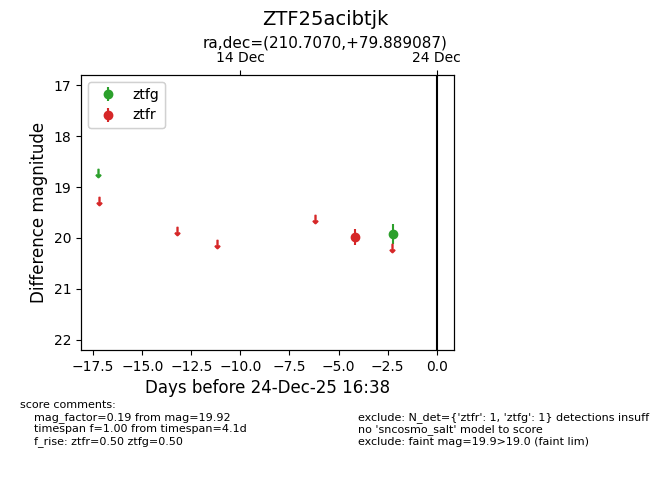
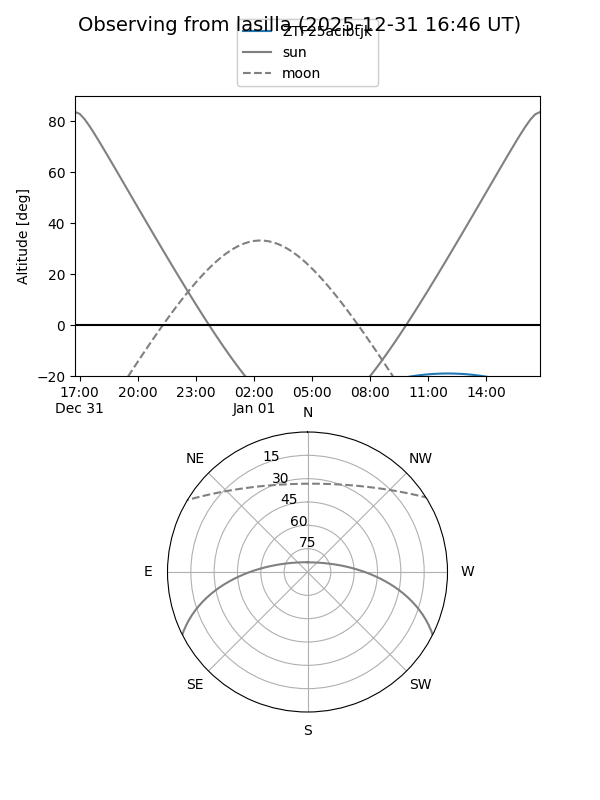
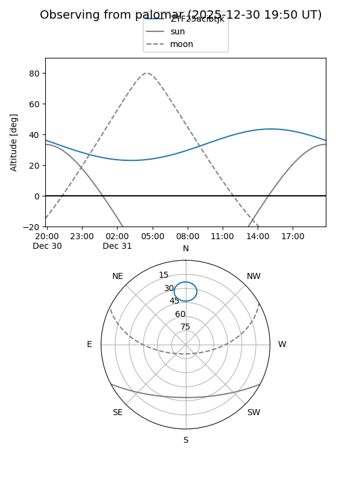

ZTF25acibtjk
Target ZTF25acibtjk at 2025-12-31 17:00
Aliases and brokers:
FINK:
Lasair:
ALeRCE:
alt names
ZTF25acibtjk (ztf,fink_ztf)
Coordinates:
equatorial (ra, dec) = 210.7070,+79.88909
equatorial (HMS+DMS) = 14:02:49.69,+79:53:20.71
galactic (l, b) = (119.0841,+36.69995)
Flags:
Photometry:
last ztfg=19.92, ztfr=19.99
1 ztfg, 1 ztfr detections
Lightcurve

Visibility


Additional plots